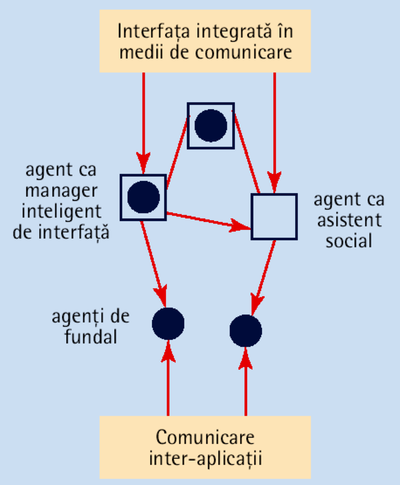
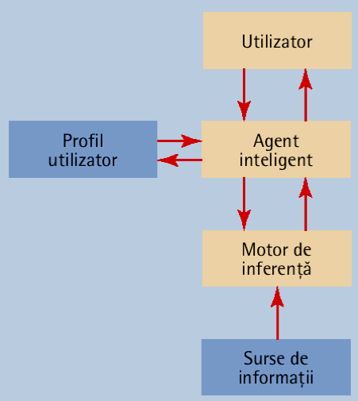

Data publicării: 27.03.2017
Autor articol: Sabin Buraga
Introducere
Una dintre importantele direcții actuale de cercetare – preponderent aplicativă – în aria interacțiunii om-calculator este cea vizând agenții software de interfață.
Articolul de față expune succint problematica, maniera de proiectare și utilizările pragmatice ale acestora. Astfel, în prima parte vom prezenta aspectele esențiale ale conceptului de agent software, urmând ca în apoi să ne focalizăm asupra agenților de interfață (UI agents).
Agenți software: aspecte esențiale
În continuare, vom prezenta o serie de considerații generale referitoare la agenții de interfață – una dintre fațetele atractive și de viitor ale domeniului implementării interfețelor cu utilizatorul, în special, și în interacțiunea om-mașină, în general.
Înainte de a expune problematica agenților de interfață, vom trece în revistă o parte dintre caracteristicile majore ale agenților software. Încă din cele mai vechi timpuri, oamenii au fost fascinați de ideea de a crea entități artificiale menite să îndeplinească diferite funcții, existența automatelor putând fi urmărită de-a lungul veacurilor.
Termenul de agent apare la mijlocul secolului XX, propus de John McCarthy, apoi de Oliver Selfridge, ambii de la MIT. Cercetările în acest domeniu au fost împărţite în două mari stadii. Primul își are originile în inteligența artificială, fiind extins ulterior la medii distribuite. Astfel, cercetările s-au concentrat mai ales în crearea de agenți pe baza modelelor de raționament simbolic, cu contribuții în interacțiunea și comunicarea între agenți, divizarea și distribuirea activităților, coordonarea și cooperarea, negocierea informațiilor etc. Al doilea val, cu o dezvoltare explozivă în ultimele două decade, studiază tipologia agenților și maniera de conlucrare în reţea, punându-se mai mult accent pe mobilitate și pe substituția de către agenți a utilizatorului uman (Bradshow, 1997).
Din prisma interacțiunii om-calculator, agenții software își găsesc utilizări variate în domenii precum proiectarea și implementarea interfețelor inteligente și adaptabile, căutarea pe Web, achiziția automată de cunoștințe și altele.
Definițiile termenului agent sunt multiple, fiind socotiți agenți atât asistenții „inteligenți”, cât și aplicațiile implementând funcții cognitive sau având capacitatea de migrare de la un calculator la altul.
O definiție frecvent utilizată este aceea că agenţii reprezintă entități software posedând funcții comportamentale, operând într-o manieră autonomă și continuă în medii colective, compuse din alți agenţi și/sau procese (fire de execuție).
Cerința de a asigura autonomia și continuitatea este dată de dorinţa dezvoltatorilor de aplicații ca agenții proiectaţi să fie capabili să acționeze într-un mod flexibil și, pe cât posibil, inteligent, adaptându-se situațiilor fără aport uman. Ideal, un agent ar trebui să poată învăța din propria sa experiență și să poată manifesta tehnici de comunicare și/sau de cooperare cu alți agenți similari. Un exemplu în acest sens este asigurarea conducerii automate a unui automobil – o direcție de interes major – și luarea de decizii la apariția unui incident/accident, fără a interacționa în mod direct cu utilizatorul.
Se pot enumera o serie de caracteristici care descriu agenții, dintre care menționăm pe următoarele (Bradshow, 1997; Buraga, 2003):
- Reacţia – abilitatea de a se comporta în mod selectiv, corespunzător contextului în care evoluează;
- Autonomia – prezentarea unui comportament direcționat spre scop, independent de utilizator;
- Colaborarea – posibilitatea de a lucra împreună cu alți agenți în vederea îndeplinirii unui scop comun;
- Comunicarea – abilitatea de a comunica cu persoane și/sau alți agenți prin intermediul unui limbaj de nivel înalt (de dorit, natural – în cazul utilizatorilor umani);
- Personalitatea – capabilitatea de a manifesta atribute umane „credibile” (e.g., emoție);
- Adaptabilitatea – posibilitatea de a învăța și de a realiza procese decizionale în funcție de cunoștințele și de experiența acumulate în rezolvarea unor situații inedite.
Nevoia de interactivitate complexă, în medii ubicue, poate fi safisfăcută prin recurgerea la agenți de interfață.
Utilizarea agenților de interfață
În ultima perioadă s-a pus tot mai mult în evidență nevoia de interactivitate sporită a aplicațiilor, mai ales în medii mobile (ubicue). Caracteristicile esențiale ale unei interfețe cu utilizatorul – funcționalitate, utilizabilitate, ergonomie, „inteligență”, simplitate etc. – sunt cu atât mai dezirabile cu cât calculatorul (i.e. orice dispozitiv computațional) devine bun al tuturor, omniprezent, cerințele principale pentru implementarea unei interfețe fiind operarea intuitivă, ușurința în manipulare, fără instruirea prealabilă a utilizatorului, existența unor posibilități de comunicare și de înțelegere facilă a scopurilor utilizatorului și flexibilitatea – de pildă, suportul pentru interacțiuni multimodale, prin intermediul unor dispozitive multiple de intrare/ieșire, facilitând comunicarea în diverse moduri: limbaj natural, gesturi, percepție globală.
Depășirea anumitor limitări ale interfețelor-utilizator actuale poate fi realizată prin intermediul utilizării agenților de interfață. Astfel, rolurile unui agent de interfață sunt următoarele:
- Asistarea utilizatorilor în comunicarea cu sistemul;
- Învățarea așa-numitului profil al utilizatorului (preferințe, opțiuni mai des folosite, operări specifice, pretenții etc.) – acest deziderat este imperios necesar mai ales pe Web, în cadrul activităților de e-business (e.g., comerț electronic);
- Selectarea în manieră inteligentă a funcționalităților dorite de utilizator.
Agenții de interfață ar putea fi considerați ca reprezentând „organele de simț” ale calculatorului prin intermediul cărora acesta să fie „conștient” că are posibilitatea dialogului cu utilizatorul uman (Negroponte, 1999). Astfel, unul dintre aspectele cele mai interesante ale unui agent de interfață este cel al personificării, agentul putând simula comportamentul unui personaj (avatar), ducând la apropierea utilizatorului uman de mașină.
Arhitectura generală a unui sistem de interfață bazat pe agenți este cea prezentată în figura următoare.

Un agent de interfață poate fi de mai multe tipuri, dintre care vom menționa în continuare agenții de filtrare a informațiilor, agenții de achiziție a cunoștințelor și asistenții digitali personali.
Agenți de filtrare a informațiilor
Componenta agent a unui astfel de sistem se bazează pe metafora asistentului inteligent, în care agentul este separat de interfața propriu-zisă și joacă rolul unui mijlocitor între calculator și utilizator, asistându-l pe acesta din urmă în dialogul cu sistemul (a se vedea și figura de mai jos). Un astfel de agent poate fi considerat drept „majordom digital” (Negroponte, 1999).

Un experiment autohton de proiectare și implementare a unui astfel de agent este descris de lucrarea (Luca & Buraga, 2009) în care se prezintă un agent software ce recomandă informații de interes pe baza descrierilor semantice incluse în cadrul documentelor Web.
Agenţi de achiziție de informații/cunoștințe
În acest caz agentul de inferfață poate participa la modificarea stării sistemului, prezentând astfel o componentă activă. Fiecare sursă separată de informație va putea fi capturată și/sau modelată de alți agenți ori alte entități software (e.g., servicii Web), iar agentul de interfață va interacționa cu acestea pentru schimbul de date/cunoștințe (Alboaie, Buraga, Alboaie, 2004). Agentul de interfață, primind fragmente de informații din mai multe surse, de cele mai multe ori eterogene, va fi capabil să le prezinte utilizatorului într-o formă unitară. Acest aspect este deosebit de interesant într-un mediu distribuit pe arie largă precum Web-ul.
Posibile utilizări sunt cele în domeniul educației asistate de calculator (învățământ virtual) sau în e-business: comerț electronic, sisteme de facilitare a turismului, ofertanți de conținut etc.
Asistenți digitali personali
Acest tip de agenți, PDA – Personal Digital Assistants, constituie probabil cea mai reprezentativă clasă de agenți de interfață, oferind de multe ori o manieră conversațională de interacțiune cu utilizatorii – pentru detalii și implementări diverse, a se parcurge (Webb, 2015).
Ca exemplificări notorii se pot enumera Apple Siri (fundamentat de cercetările lui Gruber, 2010), Google Now și Microsoft Cortana.
Ideal, un asemenea agent posedă cunoștințe referitoare la proprietățile sistemului (resurse, mod de operare, interacțiune cu alte dispozitive/utilizatori etc.) și despre abilitățile și preferințele utilizatorilor. Agentul va oferi ajutor și/sau sfaturi (recomandări) pe baza acestor cunoștințe, în funcție de activitățile întreprinse de utilizator.
Funcționalitățile oferite de agenții personali sunt actualmente disponibile ca servicii Web publice, exploatabile grație cloud computing-ului. Un exemplu edificator în acest sens este dat de inițiativa There is a bot for that. Suportul oferit dezvoltatorilor poate fi urmărit în cadrul platformei Botpress.
Concluzii
Articolul de față a realizat o expunere deosebit de lapidară a problematicilor interacțiunii cu utilizatorul mediată de agenții de interfață. De asemenea, s-au prezentat câteva dintre contribuțiile autohtone în cadrul acestei arii de cercetare.
Din punctul de vedere al integrării agenților software în cadrul interfeței cu utilizatorul oferite, trebuie găsite răspunsuri viabile la întrebări precum „Instrumentele de proiectare și de dezvoltare oferite în prezent sunt suficient de flexibile?”, „Sistemele de operare pun la dispoziție suportul necesar pentru crearea de agenți de interfață de către utilizatorii finali?”, „Cum se asigură independența de hardware?”, „Cum se rezolvă problemele legate de intimitatea datelor și acțiunilor?” sau „Care este suportul pentru accesarea de la distanță a resurselor (date, informații, cunoștințe) în mod transparent?”.
Viitorul ne va da răspunsurile la întrebările de mai sus și, de asemenea, va oferi „cheia” evoluției mijloacelor de implementare avansată a agenților digitali personali, în contextul unei tot mai diversificate și complexe interacțiuni dintre oameni și entități computaționale.
Referințe bibliografice
- Alboaie, S., Buraga, S., Alboaie, L., “An XML-based Serialization of Information Exchanged by Software Agents”, International Informatica Journal, Vol. 28, No. 1, 2004.
- Bradshow, J., Software Agents, AAAI Press, 1997.
- Buraga, S., “Suportul pentru implementare”, C. Pribeanu (ed.), Introducere în interacțiunea om-calculator. Matrix Rom, 2003. ISBN 973-685-638-0.
- Buraga, S., Semantic Web. Fundamente și aplicații. Matrix Rom, 2004 – varianta electronică este disponibilă online la http://www.slideshare.net/busaco/sabin-buraga-semantic-web-fundamente-i-aplicaii
- Gruber, T., “Big Think Small Screen: How semantic computing in the cloud will revolutionize the consumer experience on the phone”. Keynote presentation at Web 3.0 conference, 2010.
- Luca, A.P., Buraga, S., “Enhancing User Experience on the Web via Microformats-Based Recommendations”, J.Filipe, J.Cordeiro (eds.), Enterprise Information Systems. Revised Selected Papers, Lecture Notes in Business Information Processing – LNBIP Volume 19, Springer, 2009.
- Negroponte, N., Era digitală. ALL Educational, Bucureşti, 1999.
- Webb, M., “On Conversational UIs”, Interconnected, June 2015: http://interconnected.org/home/2015/06/16/conversational_uis
- * * *, Botpress, 2017: http://botpress.io/
- * * *, There is a bot for that, 2017: http://thereisabotforthat.com/